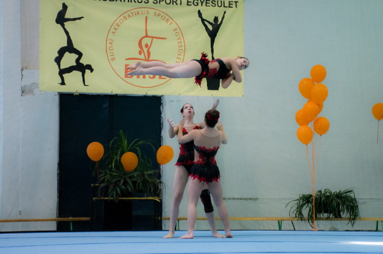
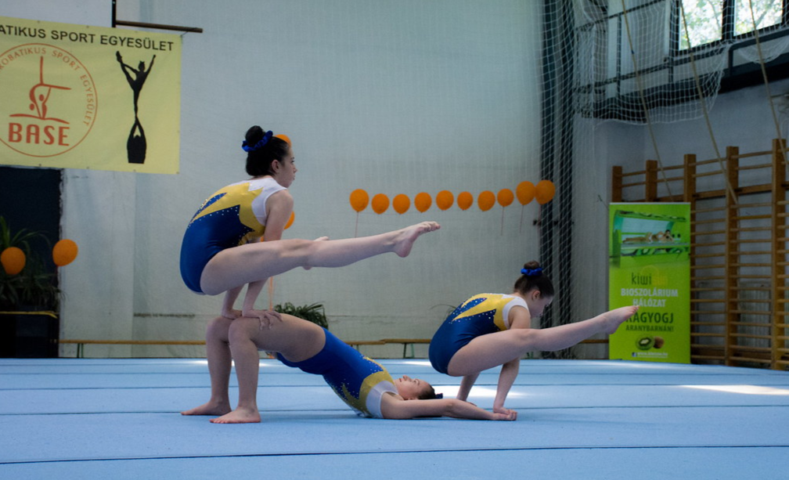
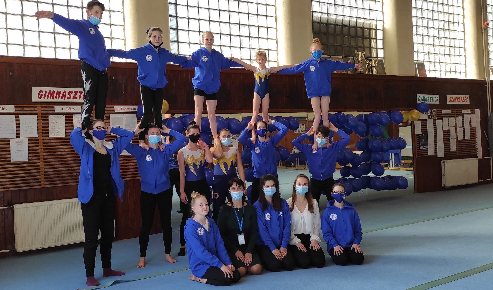
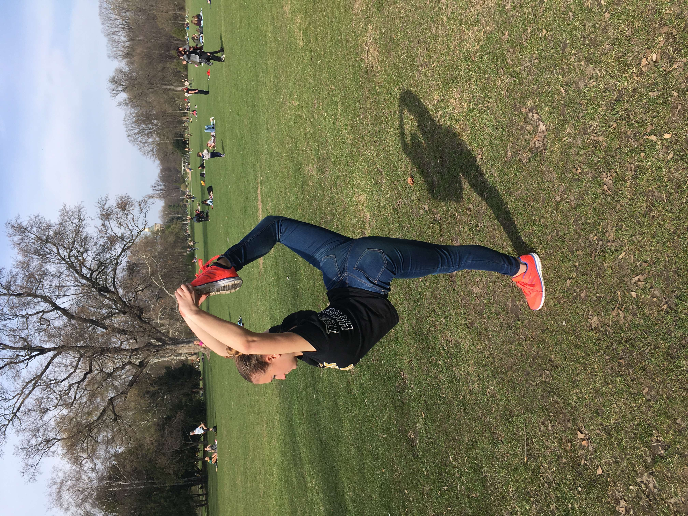

Sport
10 éves korom óta sportakrobatikázom, sajnos idén az egyetem kezdésével abba kellett hagynom a verseny szintű sportolást. Általában ilyen korban is hagyják abba a legtöbben, nagyrészt amiatt is, mert 20 éves korra már a több éves edzés-nyújtás-lazítás kikezdi az ízületeket. Az alábbiakban pár verseny fotót mutatok be.





Az alábbi linkeken videókat is elérhet: